Surface area and volume of objects
In this chapter, you will investigate the formulae we can use to calculate the area of the outer surfaces of cubes and rectangular prisms. Using nets of these 3D objects will help you to understand how we get to these formulae. You will then explore the formulae we can use to calculate the amount of space that solid cubes and rectangular prisms take up. The amount of space is known as their volume. You will then come to understand the difference between the volume and the capacity of cubes and rectangular prisms. You will also learn about the units that are used to calculate surface area, volume and capacity, and you will find out how to convert between different units of measurement.
Surface area of cubes and rectangular prisms
Investigating surface area
-
Follow the instructions below to make a paper cube.
Step 1: Cut off part of an A4 sheet so that you are left with a square.
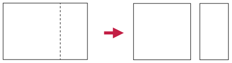
Step 2: Cut the square into two equal halves.

Step 3: Fold each half square lengthwise down the middle to form two double-layered strips.
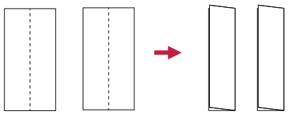
Step 4: Fold each strip into four square sections, and put the two parts together to form a paper cube. Use sticky tape to keep it together.
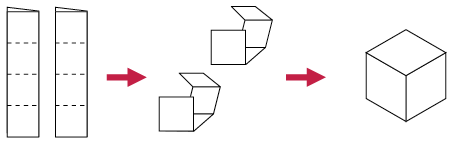
-
Number each face of the cube. How many faces does the cube have?
-
Measure the side length of one face of the cube.
-
Calculate the area of one face of the cube.
-
Add up the areas of all the faces of the cube.
The surface area of an object is the sum of the areas of all its faces (or outer surfaces).
As for other areas, we measure surface area in square units, for example mm2, cm2, m2.
A cube has six identical square faces. A die (plural: dice) is an example of a cube.
A rectangular prism also has six faces, but its faces can be squares and/or rectangles. A matchbox is an example of a rectangular prism.
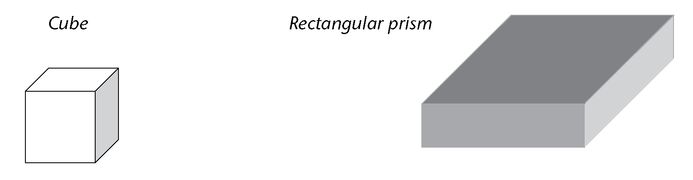
Using nets of rectangular prisms and cubes
It is sometimes easier to see all the faces of a rectangular prism or cube if we look at its net. A net of a prism is the figure obtained when cutting the prism along some of its edges, unfolding it and laying it flat.
-
Take a sheet of paper and wrap it around a matchbox so that it covers the whole box without going over the same place twice. Cut off extra bits of paper as necessary so that you have only the paper that covers each face of the matchbox.
-
Flatten the paper and draw lines where the paper has been folded. Your sheet might look like one of the following nets (there are also other possibilities):
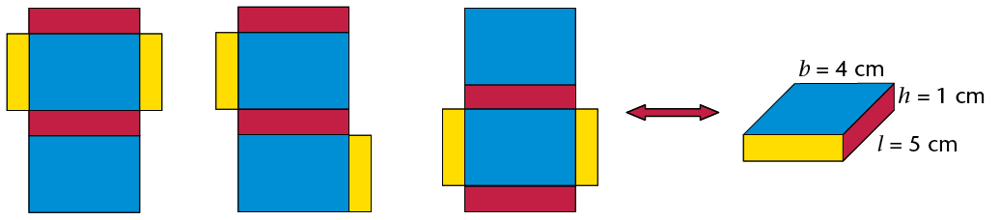
-
Notice that there are six rectangles in the net, each matching a rectangular face of the matchbox. Point to the three pairs of identical rectangles in each net.

-
Use the measurements given to work out the surface area of the prism. (Add up the areas of each face.)
-
Explain to a classmate why you think the following formula is or is not correct:
Surface area of a rectangular prism \(= 2(l \times b) + 2(l \times h) + 2(b \times h)\)
-
Here are three different nets of the same cube.
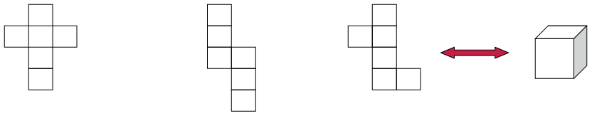
-
Can you picture in your mind how the squares can fold up to make a cube?
-
If the length of an edge of the cube is 1 cm, what is the area of one of its faces?
What then is the area of all its six faces?
-
Explain to a classmate why you think the following formula is or is not correct: Surface area of a cube \(=6(l\times l)=6l^2)\)
-
If the length of an edge of the cube above is 3 cm, what is the surface area of the cube?
-
Working out surface areas
-
Work out the surface areas of the following rectangular prisms and cubes.

-
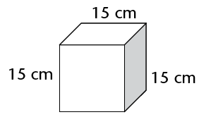
-
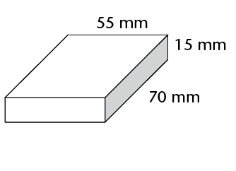
- 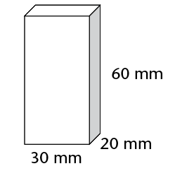
-
The following two boxes are rectangular prisms. The boxes must be painted.
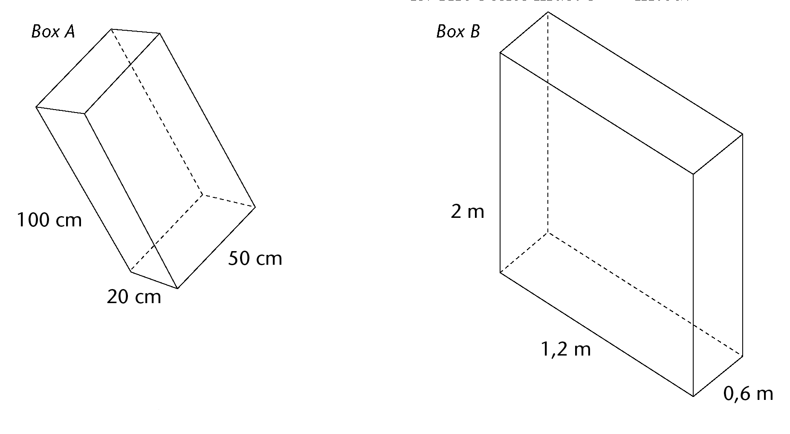
-
Calculate the total surface area of box A and of box B.
-
What will it cost to paint both boxes if the paint costs R1,34 per m2?
-
-
Two cartons, which are rectangular prisms, are glued together as shown. Calculate the surface area of this object. (Note which faces can be seen and which cannot.)

-
This large plastic wall measures \(3 \text{m} \times 0,5 \text{m} \times 1,5 \text{m}\). It has to be painted for the Uyavula Literacy Project. The wall has three holes in it, labelled A, B and C, as shown. The holes go right through the wall. The measurements of the holes are in mm.
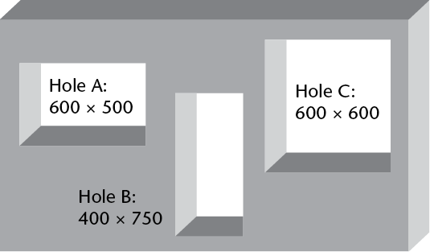-
Calculate the area of the front and back surfaces that must be painted.
Remember from the previous chapter:
1 cm2 = 100 mm2
1 m2= 10 000 cm2
-
Calculate the area of the two side faces, as well as the top face.
-
Calculate the total surface area of the wall, excluding the bottom and the inner surfaces where the holes are, because these will not be painted.
-
What will it cost if the water-based paint costs R2,00 per m2?
-
Volume of rectangular prisms and cubes
2D shapes are flat and have only two dimensions, namely length (l) and breadth (b). 3D objects have three dimensions, namely length (l), breadth (b) and height (h). You can think of a dimension as a direction in space. Look at these examples:
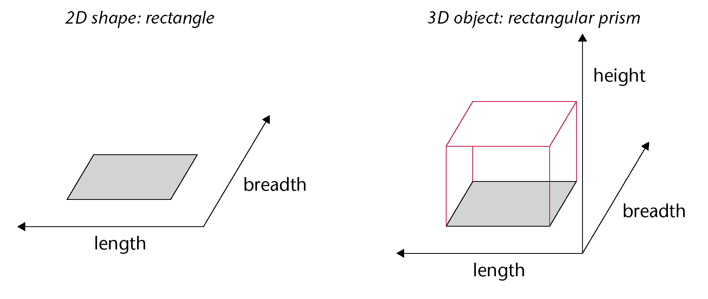
3D objects therefore take up space in a way that 2D shapes do not. We can measure the amount of space that 3D objects take up.
Every object in the real world is 3D. Even a sheet of paper is a 3D object. Its height is about 0,1 mm.
Cubes to measure amount of space
We can use cubes to measure the amount of space that an object takes up.
-
Identical toy building cubes were used to make the stacks shown below.
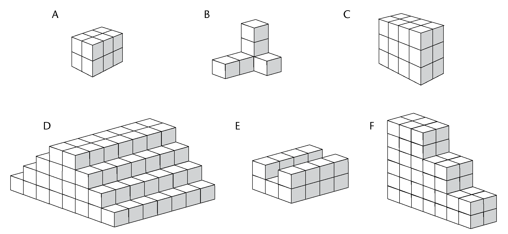-
Which stack takes up the least space?
-
Which stack takes up the most space?
-
Order the stacks from the one that takes up the least space to the one that takes up the most space. (Write the letters of the stacks.)
The space (in all directions) occupied by a 3D object is called its volume.
Cubes are the units we use to measure volume. A cube with edges of 1 cm (that is, \(1\text{ cm} \times 1\text{ cm} \times 1 \text{ cm})\) has a volume of one cubic centimetre (1 cm3).
-
-
The figure on the right shows a rectangular prism made from 36 cubes, each with an edge length of 1 cm. The prism thus has a volume of 36 cubic centimetres (36 cm 3)
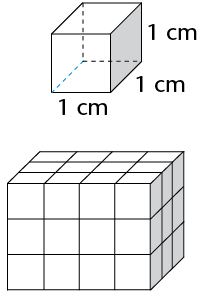-
The stack is taken apart and all 36 cubes are stacked again to make a new rectangular prism with a base of four cubes (see A below.) How many layers of cubes will the new prism be? What is the height of the new prism?
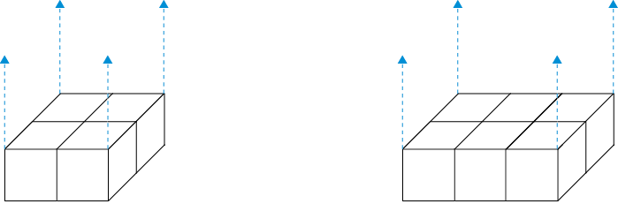
-
Repeat (a), but this time make a prism with a base of six cubes (see B above).
-
Which one of the rectangular prisms in questions (a) and (b) takes up the most space in all directions? (Which one has the greatest volume?)
-
What will be the volume of the prism in question (b) if there are 7 layers of cubes altogether?
-
A prism is built with 48 cubes, each with an edge length of 1 cm. The base consists of 8 layers. What is the height of the prism?
-
Formula to calculate volume
You can think about the volume of a rectangular prism in the following way:
Step 1: Measure the area of the bottom face (also called the base) of a rectangular prism. For the prism given here: \(A = l \times b = 6 \times 3 = 18\) square units.

Step 2: A layer of cubes, each 1 unit high, is placed on the flat base. The base now holds 18 cubes. It is \(6 \times 3 \times 1\) cubic units.

Step 3: Three more layers of cubes are added so that there are 4 layers altogether. The prism's height (h) is 4 units. The volume of the prism is:

\[ \begin{align} V &= (6 \times 3) \times 4 \\ \text{or } V &= \text{Area of base} \times \text{number of layers}\\ &=(l \times b) \times h \end{align} \]
Therefore:
\[ \begin{align} \textbf{Volume of a rectangular prism} & = \text{Area of base} \times \text{height} \\ &= l \times b \times h \end{align} \]
\[ \begin{align} \textbf{Volume of a cube} & = l \times l \times l \text{ (edges are all the same length)} \\ &= l^3 \end{align} \]
Applying the formulae
-
Calculate the volume of these prisms and cubes.


-
Calculate the volume of prisms with the following measurements:
- l = 7 m, b = 6 m, h
= 6 m
-
l = 55 cm, b = 10 cm, h = 20
cm
-
Surface of base = 48 m2, h = 4 m
- Surface
of base = 16 mm2,
h = 12 mm
- l = 7 m, b = 6 m, h
= 6 m
-
Calculate the volume of cubes with the following edge lengths:
- 7 cm
- 12 mm
- 7 cm
-
Calculate the volume of the following square-based prisms:
- side of the base = 5 mm, h = 12
mm
- side of the base = 11 m, h = 800 cm
- side of the base = 5 mm, h = 12
mm
-
The volume of a prism is 375 m3. What is the height of the prism if its length is 8 m and its breadth is 15 m?
Converting between cubic units
Cubic units to measure volume
This drawing shows a cube (A) with an edge length of1 m. Also shown is a small cube (B) with an edge length of 1 cm.
How many small cubes can fit inside the large cube?
- 100 small cubes can fit along the length of the base of cube A (because there are 100 cm in 1 m).
- 100 small cubes can fit along the breadth of the base of cube A.
- 100 small cubes can fit along the height of cube A.
\[ \begin{align} \text{ Total number of 1 cm}^3 \text{ cubes in 1 m}^3 &= 100 \times 100 \times 100\\ &= 1 000 000 \\ \therefore 1 \text{ m}^3 &= 1000000 \text{ cm}^3 \end{align} \]
Work out how many mm3 are equal to 1 cm3:
\[ \begin{align} 1 \text{ cm}^3 & = 1 \text{ cm} \times 1 \text{ cm} \times 1 \text{ cm}\\ &= \text{______ mm} \times \text{______ mm} \times \text{______ mm}\\ &= \text{______ mm}^3 \end{align} \]
Cubic units:
1 m3 = 1 000 000 cm3
(multiply by 1 000 000 to change m3 to cm3)
1 cm3 = 0,000001 m3
(divide by 1 000 000 to change cm3 to m3)
1 cm3 = 1 000 mm3
(multiply by 1 000 to change cm3 to mm3)
1 mm3 = 0,001 cm3
(divide by 1 000 to change mm3 to cm3)
Working with cubic units
-
Which unit, the cubic centimetre (cm3) or the cubic metre (m3), would be used to measure the volume of each of the following?
-
a bar of soap
-
a book
-
a wooden rafter for a roof
-
sand on a truck
-
a rectangular concrete wall
-
a die
-
water in a swimming pool
-
medicine in a syringe
-
-
Write the following volumes in cm3:
-
1 000 mm3
-
3 000 mm3
-
2 500 mm3
-
4 450 mm3
-
7 824 mm3
-
50 mm3
-
-
Write the following volumes in m3:
-
1 000 000 cm3
-
4 000 000 cm3
-
1 500 000 cm3
-
2 350 000 cm3
-
500 000 cm3
-
350 000 cm3
-
-
Write the following volumes in cm3:
-
2 000 mm3
-
4 120 mm3
-
1,5 m3
-
34 m3
-
50 000 mm3
-
2,23 m3
-
-
A rectangular hole has been dug for a children's swimming pool. It is 7 m long, 4 m wide and 1 m deep. What is the volume of earth that has been dug out?
-
Calculate the volume of wood in the plank shown below. Answer in cm3.
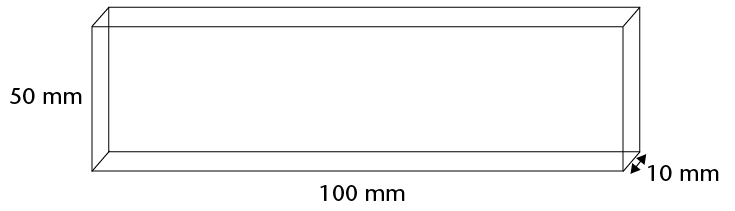
-
The drawing shows the base (viewed from below) of a stack built with 1 cm3cubes. The stack is 80 mm high everywhere.
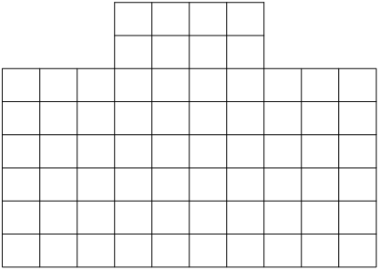-
What is the volume of the stack?
-
Complete the following:
Volume of stack = area of base
-
-
Calculate the volume of each of the following rectangular prisms:
-
length = 20 cm; breadth = 15 cm; height = 10 cm
-
length = 130 mm; breadth = 10 cm; height = 5 mm
-
length = 1 200 cm; breadth = 5,5 m; height = 3 m
-
length = 1,2 m; breadth = 2,25 m; height = 4 m
-
area of base = 300 cm2; height = 150 mm
-
area of base = 12 m2; height = 2,25 m
-
Volume and capacity
The space inside a container is called the internal volume, or capacity, of the container. Capacity is often measured in units of millilitres (ml), litres (ℓ) and kilolitres (kl). However, it can also be measured in cubic units.
Equivalent units for volume and capacity
If the contents of a 1 ℓ bottle are poured into a cube-shaped container with internal measurements of \(10 \text{cm} \times 10 \text{cm} \times 10 \text{cm}\), it will fill the container exactly. Thus:
\[ \begin{align} (10\text{ cm} \times 10 \text{ cm} \times 10 \text{ cm}) &= 1 ℓ\\ \text{or } 1 000 \text{ cm}^3&= 1 ℓ \end{align} \]
\[ \begin{align} \text{ Since 1 ℓ} &= 1 000 \text{ ml} &\\ 1 000 \text{ cm}^3 &= 1 000 \text{ ml} &\text{ [1 ℓ} = 1 000 \text{ cm}^3]\\ \therefore 1 \text{ cm}^3 &= 1 \text{ ml } &\text{[divide both sides by 1 000]} \end{align}\]
\[ \begin{align} \text{ Since 1 kl} &= 1 000 ℓ &\\ &= 1000 \times (1000 \text{ cm}^3) & \text{ [1 ℓ = 1000 cm}^3\text{]} \\ & = 1 000 000 \text{cm}^3 &\\ & = 1 \text{ m}^3 & \text{[ 1 000 000 cm}^3 = 1 \text{ m}^3\text{]} \end{align}\]
This means that an object with a volume of 1 cm3 will take up the same amount of space as 1 ml of water. Or an object with a volume of 1 m3 will take up the space of 1 kl of water.
The following diagram shows the conversions in another way:

Conversion is the changing of something into something else. In this case, it refers to changes between equivalent units of measurement.
From the diagram on the previous page, you can see that:
- 1 ℓ = 1 000 ml; 1 ml = 0,001 ℓ
- 1 kl = 1 000 ℓ; 1 ℓ = 0,001 kl
- 1 ml = 1 cm3
- 1 ℓ = 1 000 cm3
- 1 kl = 1 000 000 cm3 or 1 m3
Remember these conversions:
1 ml = 1 cm3
1 kl = 1 m3
Volume and capacity calculations
-
Write the following volumes in ml:
-
2 000 cm3
-
250 cm3
-
1 ℓ
-
4 ℓ
-
2,5 ℓ
-
6,85 ℓ
-
0,5 ℓ
-
0,5 cm3
-
-
Write the following volumes in kl:
-
2 000 ℓ
-
2 500 ℓ
-
5 m3
-
6 500 m3
-
3 000 000 cm3
-
1 423 000 cm3
-
20 ℓ
-
2,5 ℓ
-
-
A glass can hold up to 250 ml of water. What is the capacity of the glass:
-
in ml?
-
in cm3?
-
-
A vase is shaped like a rectangular prism. Its inside measurements are \(15 \text{cm} \times 10 \text{cm} \times 20 \text{cm}\). What is the capacity of the vase (in ml)?
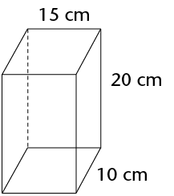 -
A liquid is poured from a full 2 ℓ bottle into a glass tank with inside measurements of 20 cm by 20 cm by 20 cm.
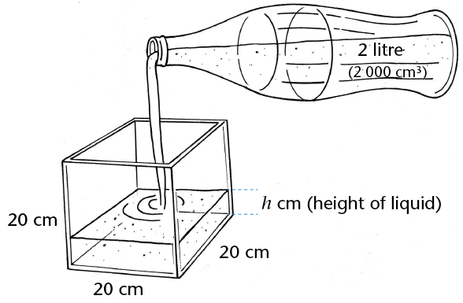-
What is the volume of the liquid when it is in the bottle?
-
What is the capacity of the bottle?
-
What is the volume of the liquid after it is poured into the tank?
-
What is the capacity of the tank?
-
How high does the liquid go in the tank?
-
In question 5 above, you should have found the following:
\[ \begin{align} \text{ Volume of liquid in tank} &= \text{Volume of liquid in bottle}\\ 20 \times 20 \times h \text{(liquid's height in tank)} &= 2 000 \text{ cm}^3 \\ h & = \frac{2000}{(20 \times 20)}\\ &= 5 \text{ cm} \end{align} \]
Note: The capacity of the tank is \(20 \text{cm} \times 20 \text{cm} \times 20 \text{cm} = 8 000 \text{cm}^3\) (8 ℓ).
The volume of liquid in the bottle is 2 000 cm3 (2 ℓ).
-
Do the following unit conversions:
- 2 348 cm2 = ______ m2
- 5,104 m2 = ______ cm2
- 1 m3 = ______ kl
- 250 cm3 =______ ml = ______ ℓ
- 0,5 kl = ______ ℓ = ______ ml
- 6,850 ℓ = ______ ml = ______ cm3
-
A rectangular prism measures \(8 \text{m} \times 4 \text{m} \times 3 \text{m}\). Calculate:
- its surface area
- its
volume
- its surface area
-
A boy has 27 cubes, with edges of 20 mm. He uses these cubes to build one big cube.
-
What is the volume of the cube if he uses all 27 small cubes?
-
What is the edge length of the big cube?
-
What is the surface area of the big cube?
-
-
A glass tank has the following inside measurements: length = 250 mm, breadth = 120 mm and height = 100 mm. Calculate the capacity of the tank:
-
in cubic centimetres
-
in millilitres
-
in litres
-
-
Calculate the capacity of each of the following rectangular containers. The inside measurements have been given.
Length
Breadth
Height
Capacity
(a)
15 mm
8 mm
5 mm
______ cm3
(b)
2 m
50 cm
30 cm
______ ℓ
(c)
3 m
2 m
1,5 m
______ kl
-
A water tank has a square base with internal edge lengths of 150 mm. What is the height of the tank when the maximum capacity of the tank is 11 250 cm3?